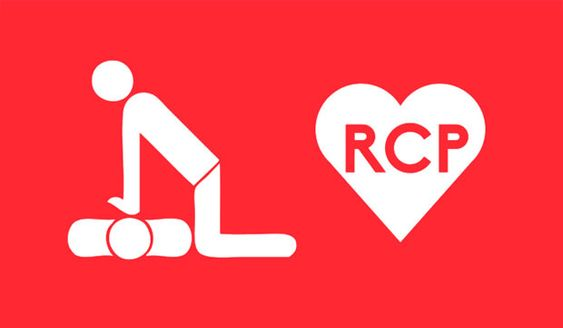

|
|
-
Causas y Consecuencias
-

La Reanimación CardioPulmonar (RCP) es un procedimiento de emergencia para salvar vidas.
que se utiliza cuando una persona ha dejado de respirar y el corazón ha cesado de latir. Esto
puede suceder después de una descarga eléctrica, un ataque cardíaco, ahogamiento o cualquier otra
circunstancia que interrumpa la actividad cardíaca.
Es mucho mejor hacer algo que no hacer nada en absoluto si temes que tus conocimientos o
habilidades no están al 100 por ciento. Recuerda que la diferencia entre hacer algo y no hacer
nada podría salvarle la vida a alguien.
Se recomienda , que si no se tiene la capacitación en RCP, se practique la reanimación
cardiopulmonar con las manos. Esto significa hacer compresiones de pecho sin interrupción de 100
a 120 por minuto hasta que lleguen los socorristas. No es necesario proporcionar respiración de rescate
La Reanimación CardioPulmonar (RCP) puede mantener el flujo de sangre oxigenada al cerebro y
otros órganos vitales hasta que un tratamiento médico más definitivo pueda restablecer el ritmo
cardíaco normal.
Cuando el corazón se detiene, la falta de sangre oxigenada puede causar daño cerebral en
solo unos minutos. Una persona puede morir en 8 o 10 minutos.
LAS CAUSAS Y LAS CONSECUENCIAS
CAUSAS
Generalmente, los paros cardíacos repentinos son ocasionados por un problema en el
sistema eléctrico del corazón, que puede ser consecuencia de una artropatía coronaria, un
infarto de miocardio u otros problemas cardíacos.
Personas de cualquier edad, sexo, raza pueden sufrir un PCR, incluso aquellas que
parecen gozar de un buen estado de salud. Posiblemente recuerde a un atleta profesional de
nivel mundial en la cima de la aptitud física que falleció de manera repentina durante un evento
deportivo.
Con frecuencia, esto es consecuencia de un paro cardíaco repentino.
Por lo general, un paro cardíaco repentino es ocasionado por un problema en el
sistema eléctrico del corazón. Si las señales eléctricas del corazón son anormales, esto
puede crear un ritmo cardíaco irregular denominado arritmia.
LOS FACTORES QUE INCREMENTAN EL RIESGO DE PCR INCLUYEN:
Antecedentes familiares de arteriopatía coronaria.
Presión arterial elevada.
Colesterol alto.
Obesidad.
Diabetes.
Estilo de vida sedentario.
Tabaquismo.
Consumo excesivo de alcohol.
Edad.
OTROS FACTORES QUE AUMENTAN EL RIESGO DE RCP INCLUYEN:
Antecedentes personales o familiares de arritmias.
Antecedentes personales o familiares de PCR.
Infarto de miocardio previo.
Insuficiencia cardíaca previa.
Abuso de drogas.
CONSECUENCIAS
La falta de oxígeno durante 5 minutos puede dañar irreversiblemente algunos órganos vitales, en especial el cerebro. Esto casi siempre es seguido de un paro cardiaco a menos que se restaure rápidamente la función respiratoria. Sin embargo, una ventilación intensiva puede tener consecuencias hemodinámicas negativas, en particular en el período cercano al paro y en otras circunstancias en las que el gasto cardíaco es bajo. En la mayoría de los casos, el objetivo final es restaurar la ventilación y la oxigenación adecuadas sin comprometer la situación cardiovascular.
Una persona que está sufriendo un paro respiratorio, posee poco tiempo para ser salvado, por lo que los médicos, enfermeros u otros testigos, deben comprender que cada minuto que pasa es de vital importancia para la víctima y que cualquier demora, puede ser fatal. Mientras más rápido sea atendido, menor puede ser el daño causado al cerebro por la falta de oxígeno.
Por esta razón, es que la reanimación que se le aplique a la víctima debe estar controlada paso a paso, con tal de que no ocurra mayor tiempo entre cada una de las maniobras que deba aplicar el especialista o quien haga uso de un DEA. Es de suma importancia poder hacerlo lo más rápido posible y reactivar el ritmo cardíaco para que la falta de oxígeno no conlleve a consecuencias desfavorables para la persona.
|